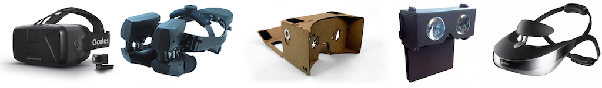

Responsive WebVR, headset optional
VR on the web threatens to cleave the web platform in twain, like mobile did before it. The solution then and the solution now is Responsive Web Design, which websites to scale well for all form factors. Similarly, for VR to succeed on the web, we need to figure out how to make VR experiences that work both in any VR headset, and also without a VR headset at all.

WebVR boilerplate is a new starting point for building responsive web VR experiences that work on popular VR headsets and degrace gracefully on other platforms. Check out a couple of demos, a simple one and one ported from MozVR.
Preview the VR experience for everyone
Say you visit a webpage, and it opens up in split-screen mode barrel distortion, chromatic aberration correction, personalized interpupillary distance, and provides 6 DOF tracking. Whoa. You reach for your VR headset only to find that you forgot it at work! How disappointing! The vast majority of normal people with no head mounted display lying around will surely be even more disappointed.
Responsive web design promises content which automatically adapts to your viewing environment by using fluid layouts, flexible images, proportional grids; a cocktail of modern web technologies. Similarly, WebVR experiences need to work even without VR hardware. This has two obvious advantages:
- The vast majority of people that don't have VR hardware can still get a feeling for the experience.
- Even if you have VR gear, donning it is a pain. This preview lets you quickly evaluate whether or not wearing is worth the hassle.
What are some reasonable fallbacks to the in-helmet VR experience? The main question boils down to emulating head tracking without wearing anything on your head. On mobile phones, the obvious answer is to use the gyroscope, for a Spotlight Stories-type experience. On desktop, we use the mouse to free-look, and also support turning using the arrow keys. This covers enough of the 3DOF orientation that all HMDs provide. Clearly missing are the three translational degrees of freedom, but these are provided only by some VR headsets, and we can imagine some interesting fallbacks for those too.
Write once, run in any VR headset
Remember the old "write once, run anywhere" promise? The web is the closest thing we have to fulfilling it, but what it actually delivers is often far from this ideal. The latest VR wave has barely begun and already the web VR world is fragmented. Case in point, vr.chromeexperiments.com don't work on Oculus, and mozvr.com demos don't work in Cardboard. The promise of WebVR is that once it lands, all will be well in the world. However, this means that we need to wait for WebVR to become fully baked. In other words, we are blocked on the valiant efforts of our dear WebVR implementers (as well as the heavyweight browser development process consisting of spec authors, security reviews, binary size, etc).
To speed up the process, we need a polyfill for WebVR which uses web APIs to provide functionality to the WebVR specification (currently, in IDL form). In the absence of a WebVR implementation, the polyfill kicks in and supports mobile VR headsets like Cardboard and Durovis Dive, which are passive contraptions that just piggyback on the smartness found in your smartphone.
Introducing: WebVR Boilerplate
The WebVR boilerplate project is on github, and consists of
two parts. Firstly, the WebVR polyfill provides WebVR
support for Cardboard-compatible devices, and orientation tracking
fallbacks where no headset is available. The WebVR polyfill can also be
installed from npm (available via npm install webvr-polyfill).
- A
CardboardHMDDevice, provides a reasonable default for interpupillary distance and field of view for cardboard-like devices. - On mobile devices, a
GyroPositionSensorVRDevice, which provides orientation through theDeviceOrientationEvent. - On PCs, a
MouseKeyboardPositionSensorVRDevice, which provides orientation through keyboard and mouse events.
It is designed to be used with THREE.js plugins that are built for the WebVR API: VRControls.js and VREffect.js, but of course any valid usage of the WebVR API should work (modulo bugs).
Secondly, the WebVR manager surfaces VR compatibility using consistent iconography and simplifies transitioning in and out of full VR mode. It also contains some of the best practices for making VR work on the web, for example, using orientation lock to keep the phone in landscape orientation, and a means of keeping the phone screen on. If you're ready to dive in, the github has all of the technical information available.
WebVR boilerplate is meant to make it easy to develop immersive experiences that run on all VR hardware, including Oculus and Cardboard, and also provide reasonable fallbacks when no specialized viewer is available.
WebVR boilerplate in action
I really liked Mozilla's Sechelt demo, inspired by the
eponymous town on British Columbia's beautiful Sunshine Coast. I've
ported it to WebVR Boilerplate. The result is the same
demo, which works in Cardboard, as well as continuing to work on desktop
and mobile devices, and on the Oculus Rift via Firefox Nightly and
Brandon's WebVR Chrome builds. It also yielded less confusing
boilerplate code and a simplified code base since
there is no longer need for an unweildy conditional to determine whether
to use DeviceOrientationControls, OrbitControls, or VRControls,
and decide between VREffect and StereoEffect.
As always, let me know what you think and feel free to point out (or fix!) my mistakes on the github.